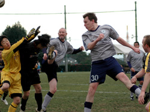
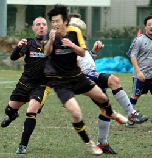
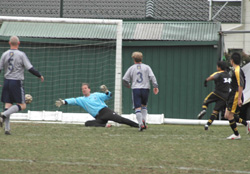

|
YC&AC, Sunday 2nd December,
Despite conditions so early and cold it even had the British players shivering in their footie boots, the Panthers initially attacked the game with surprising pace. Facing the wind we were forced into shorter goal kicks than we are used to from Tomo and that put the midfield and defense slightly on the back foot. We didn’t let this get to us though and made a few attempts to sneak the ball up the wings with some delightful one touch passing, the Panthers manager and captain had finally come to realise all his shouting had not been in vain (a prospect he had been dreaming about fondly since the start of the season), but YCAC were not taking this laying down and defending well. After a few chances we thought our luck was in! A free kick just outside the area. Jon stepped up to take it with an air of John Barnes of old about him, it cleared the wall and the keeper fumbled it where Lee ‘super defender’ Rawlinson was just short of scoring as the keeper pounced on the free ball, it was either the fact that he had come so close to his first goal of the season or he had just realised the long run he had back to his position, that then explained the look upon his face.
The Panthers continued the attack and were awarded two goals in the first half, one a great piece of team work building up to Chris’s goal from just inside the 18 yard box; a thunderous shot that had all the Panthers jumping up and down in astonishment and joy, the second a lovely cross from the left wing which Yusuke placed past the keeper in fine striking style. YCAC were clearly not going to take this laying down and as one of their strikers kept yelling “get out of bed” they finally began to move the ball around making a few chances which were shut down pretty quickly, however a little movement and a hard strike from 25 yards resulted in a 2-1 score line at half time.
With the wind at our back we had the advantage but still were bearing the brunt of the YCAC attacks. After a good interplay down the left YCAC levelled and the game was on again. Not wanting to lose again by one goal we picked up the pace and some nice passing out of the defense led to a lovely goal by Jon who looped round the keeper, who swears he meant to do it like that! YCAC levelled the game again with another clean goal but we weren’t ready to call it quits. 10 minutes to go and some skill from Romen down the left wing led to a prime shooting position just inside the box, a crisp shot led us back into the lead at 4-3.
The last few minutes YCAC attempted to get back in but with some stalwart defending, ably led by Rob and good possession in the mid field, we held them off.
Finally, the Tokyo Panthers win their first game and in great British style celebrated with a nice cup of tea and a few biscuits at which point Chris Batterham was awarded man of the match for his sterling contribution throughout the game. The January transfer window is still open, but it looks as if with the recent acquisitions the Panthers have strengthened their squad and are ready to take on all comers in Division 3, all sights will be set on Division 2 in 2010, or perhaps 2020!!!
Report by Lee Rawlinson
|